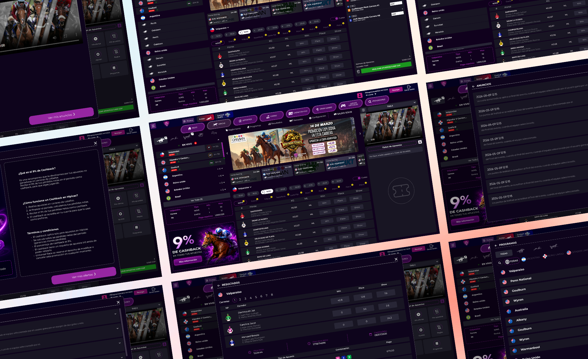
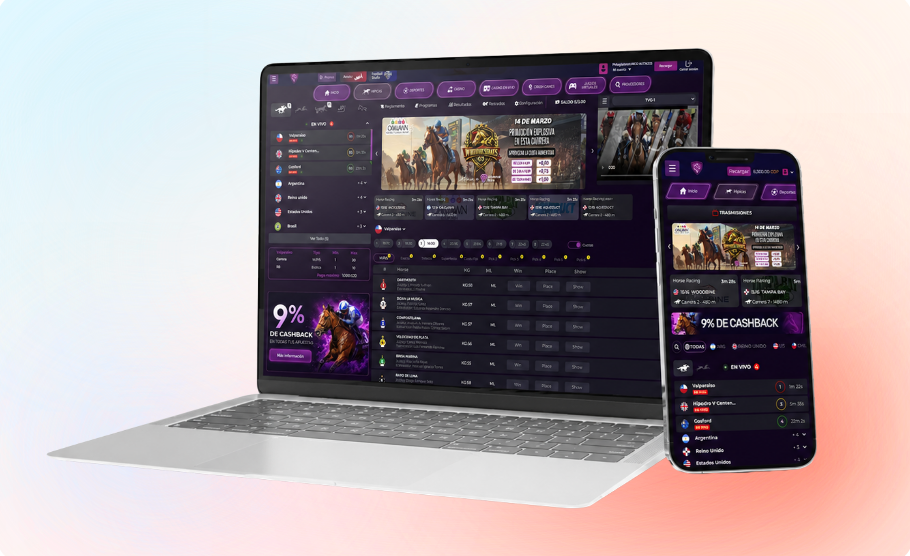

Consecutive races
Make the active race easy to distinguish when several upcoming events are close together.
Universal Race brings together races, participants, and markets that need to be interpreted quickly. The UX/UI work focused on making alternatives easier to read and compare while adapting that same logic from desktop to mobile without losing relevant information.

Before making a selection, users need to identify the race, review participants, and find the betting options they are interested in.
When all these elements compete visually, comparing alternatives requires more effort and important information becomes easier to overlook.
The design needed to support a transition from an overall view to a specific decision without forcing users to memorize data across screens.
The challenge was not simply displaying information, but making comparison easier before the user selected an option.
Make the active race easy to distinguish when several upcoming events are close together.
Present data through stable patterns that make comparison between horses easier.
Provide access to different betting options without giving every alternative the same visual weight.
Navigation follows the order in which a horse racing bet is analyzed: first the event, then its participants, and finally the available betting options.
Establishes the event being reviewed and acts as the starting point.
Allows users to review and compare the horses associated with the selected race.
Presents the available betting alternatives once the event has been selected.

Desktop allows users to compare more elements simultaneously. Mobile needs to reveal the same information more progressively.
The adaptation was not about simply shrinking components, but deciding what should appear first and what can be discovered later.
Horizontal space allows more participants and data to remain visible at the same time.
Content follows a vertical sequence and prioritizes what users need for the next decision.
Race, participants, and markets keep a recognizable relationship across devices.

The decisions focused on reducing the effort needed to identify races, compare participants, and reach the desired betting market.
The selected event is visually differentiated from the other available races.
Repeated positions and styles make comparison between alternatives easier.
Related data is grouped to avoid presenting a continuous sequence of undifferentiated values.
Primary alternatives are prioritized while additional options remain available when users need to go deeper.
Content is reorganized according to importance rather than simply preserving its desktop position.
The solution creates a recognizable sequence between race, participants, and markets and maintains that logic across web and mobile.
The goal was not to show less information, but to make it easier to interpret at the moment users need it.